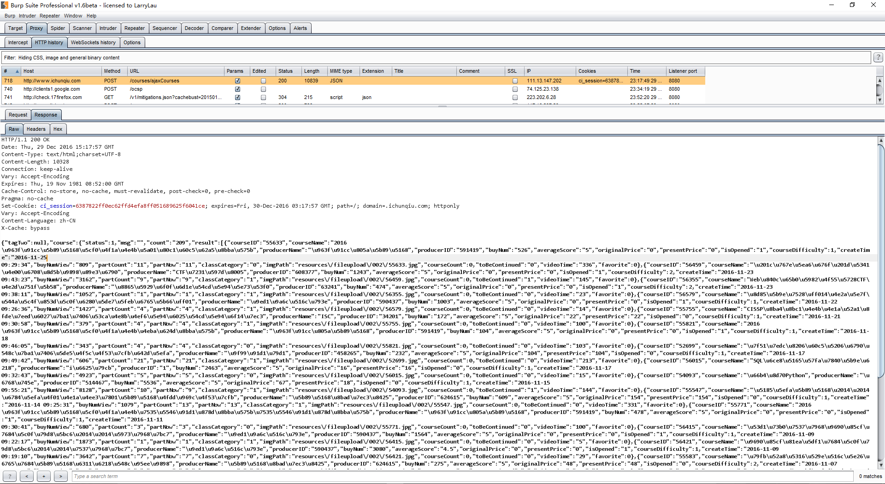

Author:wnagzihxa1n
E-Mail:wnagzihxa1n@gmail.com
在ichunqiu上面看了个视频，讲的是Python写工具，里面提到爬ichunqiu的课程信息，并且简单的实现了一下，想到在ichunqiu上面学习也蛮长时间了，课程越来越多，也是很有必要看一下最新的课程都有哪些，很简单的东西，想学爬虫的同学可以跟着动手玩的，也当做一个新手的爬虫入门教程
写爬虫前期的准备工作蛮重要的，比如我要爬ichunqiu的课程信息，那么我就要先去ichunqiu官网翻一翻，找找所有课程这种字眼，比如可以一页一页翻的按钮，就像这种形式
http://www.xxx.com/course.php?page=xxx
但不一定是这种形式，可能还有很多参数跟着
打开官网，发现在知识体系里面有所有课程的信息
而且满足我们一页一页翻的要求

打开Burp Suite，可能有同学对这玩意不是很熟悉，我这里记录的详细一点
这个位置点击关掉，不要开启拦截

这里添加一个代理，并且勾选上，并不是一定要8080端口，可以是其它没有占用的端口

打开浏览器设置代理，这里代理的端口由上面在Burp Suite里面设置的端口决定

那么设置好之后，访问ichunqiu的官网
同时看到Burp Suite

虽然有一些不相关的包，但是并没有什么关系，这是首页的请求包，我们点击这个包，在下面就会显示出请求的包Request，并且边上还有返回包Response
点击Response，可以看到返回包的内容，箭头指向的是返回包的头部

我们现在点击ichunqiu首页的知识体系，等加载完成，在Burp Suite里清空HTTP history
清空完成，点击知识体系最下面的第二页的按钮
返回Burp Suite可以看到已经抓到请求包了

请求包中红色框框里的就是请求的参数
courseTag=&courseDiffcuty=&IsExp=&producerId=&orderField=&orderDirection=&pageIndex=2&tagType=2
看到有一个pageIndex=2，那这个很明显是页数的参数，我们这里只是要遍历所有的页面，然后获取所有的课程信息即可，所以其它参数可以不关心
点击右边的Response返回包

这是JSON格式的返回数据
我们只需要将返回的数据包进行解码即可获取本页面所有课程信息
然后再循环遍历页面就可以获取全部课程的信息了
思路有了，那么我们来动手实践
这里使用的是Python的requests模块，好用的很，后面的一堆参数来自上面请求时发送的请求包，如果不是很清楚，可以回去再看看
先请求一个，看看是否返回正常，我们在Burp Suite里看到的请求方式是POST，所以这里要用requests.post()，将请求头里面的参数复制进data变量，请求的时候带上这个变量
#coding:utf-8
import sys
import json
import time
import requests
source_url = 'http://www.ichunqiu.com/courses/ajaxCourses'
def main():
reload(sys)
sys.setdefaultencoding('utf-8')
data = {
'IsExp': '',
'courseDiffcuty': '',
'courseTag': '',
'orderDirection': '',
'orderField': '',
'pageIndex': 2,
'producerId': '',
'tagType': 2
}
json_source = requests.post(url=source_url, data=data)
print json_source.text
if __name__ == '__main__':
main()
返回一堆代码，拷贝到临时文件里，能判断的是：肯定不是我们在Burp Suite里看到的那些

用浏览器打开

给你厉害的，看来是做了反爬虫措施了，这种情况绕过也简单的
回到Burp Suite，找到刚才那个请求包
POST /courses/ajaxCourses HTTP/1.1
Host: www.ichunqiu.com
User-Agent: Mozilla/5.0 (Windows NT 10.0; Win64; x64; rv:49.0) Gecko/20100101 Firefox/49.0
Accept: */*
Accept-Language: zh-CN,zh;q=0.8,en-US;q=0.5,en;q=0.3
Accept-Encoding: gzip, deflate
Content-Type: application/x-www-form-urlencoded; charset=UTF-8
X-Requested-With: XMLHttpRequest
Referer: http://www.ichunqiu.com/courses
Content-Length: 95
Cookie: pgv_pvi=3821796872; Hm_lvt_1a32f7c660491887db0960e9c314b022=1483012493;
Hm_lvt_9104989ce242a8e03049eaceca950328=1455968199,1456113186; ci_session=6387822ff0ec62ffd4efa8ff051689625f6041ce;
chkphone=acWxNpxhQpDiAchhNuSnEqyiQuDIO0O0O;
__jsluid=0f0701d87a77636329bd5ff08fc61364;
Hm_lpvt_1a32f7c660491887db0960e9c314b022=1483024570
Connection: keep-alive
courseTag=&courseDiffcuty=&IsExp=&producerId=&orderField=&orderDirection=&pageIndex=2&tagType=2
我们截取其中一部分就可以
Host: www.ichunqiu.com
User-Agent: Mozilla/5.0 (Windows NT 10.0; Win64; x64; rv:49.0) Gecko/20100101 Firefox/49.0
Accept: */*
Accept-Language: zh-CN,zh;q=0.8,en-US;q=0.5,en;q=0.3
Accept-Encoding: gzip, deflate
Content-Type: application/x-www-form-urlencoded; charset=UTF-8
X-Requested-With: XMLHttpRequest
Referer: http://www.ichunqiu.com/courses
修改代码，加上请求头
#coding:utf-8
import sys
import json
import time
import requests
source_url = 'http://www.ichunqiu.com/courses/ajaxCourses'
def main():
reload(sys)
sys.setdefaultencoding('utf-8')
headers = {
'Host': 'www.ichunqiu.com',
'User-Agent': 'Mozilla/5.0 (Windows NT 10.0; Win64; x64; rv:49.0) Gecko/20100101 Firefox/49.0',
'Accept': 'application/json, text/javascript, */*; q=0.01',
'Accept-Language': 'zh-CN,zh;q=0.8,en-US;q=0.5,en;q=0.3',
'Accept-Encoding': 'gzip, deflate',
'Content-Type': 'application/x-www-form-urlencoded; charset=UTF-8',
'X-Requested-With': 'XMLHttpRequest',
'Referer': 'http://www.ichunqiu.com/courses',
}
data = {
'IsExp': '',
'courseDiffcuty': '',
'courseTag': '',
'orderDirection': '',
'orderField': '',
'pageIndex': 2,
'producerId': '',
'tagType': 2
}
json_source = requests.post(url=source_url, data=data, headers=headers)
print json_source.text
if __name__ == '__main__':
main()
运行后发现返回了和在Burp Suite里看到一样JSON数据
我们来分析一下JSON数据的结构

截取关键部分
{
"tagTwo":null,
"course":{
"status":1,
"msg":"",
"count":"210",
"result":[{ "courseID":"55765",
"courseName":"\u5982\u4f55\u5728\u6e17\u900f\u6d4b\u8bd5\u4e2d\u653b\u65e0\u4e0d\u514b",
"producerName":"\u5b89\u5168\u8bad\u7ec3\u8425",
"producerID":"624615",
"buyNum":"1353",
"averageScore":"5",
"originalPrice":"12",
"presentPrice":"12",
"isOpened":"0",
"courseDifficulty":1,
"createTime":"2016-11-28 09:31:31",
"buyNumView":"2376",
"partCount":"2",
"partNow":"2",
"classCategory":"1",
"imgPath":"resources\/fileupload\/002\/55765.jpg",
"courseCount":0,
"toBeContinued":"0",
"videoTime":"42",
"favorite":0
},
],
"perPageSize":20,
"totalPageNum":11,
"currentPageNum":2,
"viewNumbers":[1,2,3,4,5],
"done":null
}
}
我们所要找的课程信息在course的result里
这里添加一个新模块json，用于解析返回的JSON数据
#coding:utf-8
import sys
import json
import time
import requests
source_url = 'http://www.ichunqiu.com/courses/ajaxCourses'
def main():
reload(sys)
sys.setdefaultencoding('utf-8')
headers = {
'Host': 'www.ichunqiu.com',
'User-Agent': 'Mozilla/5.0 (Windows NT 10.0; Win64; x64; rv:49.0) Gecko/20100101 Firefox/49.0',
'Accept': 'application/json, text/javascript, */*; q=0.01',
'Accept-Language': 'zh-CN,zh;q=0.8,en-US;q=0.5,en;q=0.3',
'Accept-Encoding': 'gzip, deflate',
'Content-Type': 'application/x-www-form-urlencoded; charset=UTF-8',
'X-Requested-With': 'XMLHttpRequest',
'Referer': 'http://www.ichunqiu.com/courses',
}
data = {
'IsExp': '',
'courseDiffcuty': '',
'courseTag': '',
'orderDirection': '',
'orderField': '',
'pageIndex': 2,
'producerId': '',
'tagType': 2
}
json_source = requests.post(url=source_url, data=data, headers=headers)
# print json_source.text
data = json.loads(json_source.text)
# print data['course']
result_len = len(data['course']['result'])
for i in range(result_len):
print "createTime:", data['course']['result'][i]['createTime'],
print "courseID:", data['course']['result'][i]['courseID'],
print "producerName:", data['course']['result'][i]['producerName'],
print "courseName:", data['course']['result'][i]['courseName']
if __name__ == '__main__':
main()
返回的数据符合我们的预期
createTime: 2016-11-28 09:31:31 courseID: 55765 producerName: 安全训练营 courseName: 如何在渗透测试中攻无不克
createTime: 2016-11-25 09:29:34 courseID: 55633 producerName: 阿里聚安全 courseName: 2016 阿里安全峰会之威胁情报论坛
createTime: 2016-11-23 09:43:23 courseID: 56459 producerName: CTF爱好者 courseName: “百度杯”十一月赛题解析
createTime: 2016-11-23 09:38:11 courseID: 56355 producerName: 补天漏洞响应平台 courseName: Web萌新如何在CTF中生存
createTime: 2016-11-22 09:26:36 courseID: 56579 producerName: 黑马公社 courseName: 超实用！4个广告屏蔽小技巧快来学！
createTime: 2016-11-21 09:30:58 courseID: 55755 producerName: ISC courseName: CISSP认证之业务连续性管理及事件应急响应演练
createTime: 2016-11-18 09:46:05 courseID: 55821 producerName: 阿里聚安全 courseName: 2016 阿里安全峰会之人才论坛
createTime: 2016-11-17 09:49:42 courseID: 52699 producerName: 龙金科 courseName: 网络舆情分析和管理工作体系搭建
createTime: 2016-11-17 09:32:43 courseID: 56015 producerName: i春秋 courseName: SQL注入基础实战
createTime: 2016-11-15 09:55:21 courseID: 54093 producerName: 杨瑞 courseName: 暴走Python
createTime: 2016-11-14 09:25:31 courseID: 55547 producerName: 安全训练营 courseName: 内建安全——构建企业代码安全保障体系
createTime: 2016-11-11 09:30:41 courseID: 55771 producerName: 阿里聚安全 courseName: 2016 阿里安全峰会之电商金融论坛电商金融论坛
createTime: 2016-11-09 09:22:17 courseID: 56415 producerName: 黑马公社 courseName: 发现男票隐藏的小秘密——女票篇
createTime: 2016-11-09 09:19:10 courseID: 56421 producerName: 黑马公社 courseName: 隐藏自己的小秘密——男票篇
createTime: 2016-11-07 09:36:45 courseID: 55583 producerName: 安全训练营 courseName: 移动化办公带来的安全挑战和问题
createTime: 2016-11-04 09:39:05 courseID: 56009 producerName: i春秋 courseName: 10月前沿漏洞复现与分析
createTime: 2016-11-04 09:35:33 courseID: 55785 producerName: 阿里聚安全 courseName: 2016 阿里安全峰会之SRC论坛
createTime: 2016-11-03 09:35:54 courseID: 53327 producerName: f8left_4st courseName: 零基础入门Android(安卓)逆向
createTime: 2016-11-02 17:17:23 courseID: 56333 producerName: 蓝冰 courseName: “百度杯”赛题解析之十月第四周比赛
createTime: 2016-11-02 09:47:22 courseID: 56049 producerName: 黑马公社 courseName: 无线上网技巧大揭秘 ,Wi-Fi信号遍地是!
[Finished in 0.9s]
好了，到这里我们已经能够针对固定URL页面解析包含的课程信息，接下来我们遍历页面参数，来遍历所有页面获取所有的课程信息，我们来获取createTime，producerName，courseName
#coding:utf-8
import sys
import json
import requests
source_url = 'http://www.ichunqiu.com/courses/ajaxCourses'
def function(url, index):
headers = {
'Host': 'www.ichunqiu.com',
'User-Agent': 'Mozilla/5.0 (Windows NT 10.0; Win64; x64; rv:49.0) Gecko/20100101 Firefox/49.0',
'Accept': 'application/json, text/javascript, */*; q=0.01',
'Accept-Language': 'zh-CN,zh;q=0.8,en-US;q=0.5,en;q=0.3',
'Accept-Encoding': 'gzip, deflate',
'Content-Type': 'application/x-www-form-urlencoded; charset=UTF-8',
'X-Requested-With': 'XMLHttpRequest',
'Referer': 'http://www.ichunqiu.com/courses',
}
data = {
'IsExp': '',
'courseDiffcuty': '',
'courseTag': '',
'orderDirection': '',
'orderField': '',
'pageIndex': index,
'producerId': '',
'tagType': 2
}
json_source = requests.post(url=url, data=data, headers=headers)
data = json.loads(json_source.text)
result_len = len(data['course']['result'])
for i in range(result_len):
print "createTime:", data['course']['result'][i]['createTime'],
print "producerName:", data['course']['result'][i]['producerName'],
print "courseName:", data['course']['result'][i]['courseName']
def main():
reload(sys)
sys.setdefaultencoding('utf-8')
for i in range(1, 12):
function(source_url, i)
if __name__ == '__main__':
main()
运行起来
createTime: 2016-12-30 09:34:08 producerName: i春秋 courseName: 常规业务漏洞及防御
createTime: 2016-12-30 09:29:10 producerName: 三十 courseName: Web狗如何在CTF-Web的套路中实现反套路
createTime: 2016-12-30 09:25:02 producerName: i春秋 courseName: 12月前沿漏洞复现与分析
createTime: 2016-12-29 09:39:20 producerName: 七少月 courseName: Android安全之软件逆向核心分析
createTime: 2016-12-28 09:43:38 producerName: 命运之轮 courseName: 告别伸手党！自己写渗透工具
createTime: 2016-12-27 09:42:29 producerName: ADO courseName: Python安全工具开发应用
createTime: 2016-12-27 09:39:37 producerName: 诸葛建伟 courseName: 战争已打响！还不来了解XMan夏令营？
createTime: 2016-12-27 09:36:47 producerName: 戴城 courseName: sqlmap系列教程
createTime: 2016-12-26 09:27:35 producerName: 由广 courseName: 信息安全等级保护-基础篇
createTime: 2016-12-22 17:38:59 producerName: 侯林 courseName: 量子密码术：公钥密码术的救赎
createTime: 2016-12-20 09:31:46 producerName: 杨树 courseName: Web狗在企业的生存之道
createTime: 2016-12-16 09:39:29 producerName: 陈宇森 courseName: CTF大牛秘籍传授:如何成为安全人才?
createTime: 2016-12-15 10:09:30 producerName: 李昌志 courseName: 安全开发学习捷径，打怪升级一路开挂
createTime: 2016-12-14 09:39:04 producerName: 李扬 courseName: 实用无线安全,免费充值吃大餐
createTime: 2016-12-13 09:28:46 producerName: 杨坤 courseName: 二进制牛人进修必学课
createTime: 2016-12-12 10:11:34 producerName: 王依民 courseName: Web安全学习,99%网站忽略了这些
createTime: 2016-12-05 10:38:48 producerName: 盘古团队 courseName: 64位iOS内核漏洞高级利用技术—手把手教你利用盘古9内核漏洞
createTime: 2016-12-02 09:11:34 producerName: i春秋 courseName: 11月前沿漏洞复现与分析
createTime: 2016-11-30 08:46:18 producerName: 补天漏洞响应平台 courseName: Web狗如何速刷补天副本
createTime: 2016-11-29 09:24:03 producerName: 黑马公社 courseName: 新技能get√ ，6个高大上浏览器技巧
createTime: 2016-11-28 09:31:31 producerName: 安全训练营 courseName: 如何在渗透测试中攻无不克
createTime: 2016-11-25 09:29:34 producerName: 阿里聚安全 courseName: 2016 阿里安全峰会之威胁情报论坛
createTime: 2016-11-23 09:43:23 producerName: CTF爱好者 courseName: “百度杯”十一月赛题解析
createTime: 2016-11-23 09:38:11 producerName: 补天漏洞响应平台 courseName: Web萌新如何在CTF中生存
createTime: 2016-11-22 09:26:36 producerName: 黑马公社 courseName: 超实用！4个广告屏蔽小技巧快来学！
createTime: 2016-11-21 09:30:58 producerName: ISC courseName: CISSP认证之业务连续性管理及事件应急响应演练
createTime: 2016-11-18 09:46:05 producerName: 阿里聚安全 courseName: 2016 阿里安全峰会之人才论坛
createTime: 2016-11-17 09:49:42 producerName: 龙金科 courseName: 网络舆情分析和管理工作体系搭建
createTime: 2016-11-17 09:32:43 producerName: i春秋 courseName: SQL注入基础实战
createTime: 2016-11-15 09:55:21 producerName: 杨瑞 courseName: 暴走Python
createTime: 2016-11-14 09:25:31 producerName: 安全训练营 courseName: 内建安全——构建企业代码安全保障体系
createTime: 2016-11-11 09:30:41 producerName: 阿里聚安全 courseName: 2016 阿里安全峰会之电商金融论坛电商金融论坛
createTime: 2016-11-09 09:22:17 producerName: 黑马公社 courseName: 发现男票隐藏的小秘密——女票篇
createTime: 2016-11-09 09:19:10 producerName: 黑马公社 courseName: 隐藏自己的小秘密——男票篇
createTime: 2016-11-07 09:36:45 producerName: 安全训练营 courseName: 移动化办公带来的安全挑战和问题
createTime: 2016-11-04 09:39:05 producerName: i春秋 courseName: 10月前沿漏洞复现与分析
createTime: 2016-11-04 09:35:33 producerName: 阿里聚安全 courseName: 2016 阿里安全峰会之SRC论坛
createTime: 2016-11-03 09:35:54 producerName: f8left_4st courseName: 零基础入门Android(安卓)逆向
createTime: 2016-11-02 17:17:23 producerName: 蓝冰 courseName: “百度杯”赛题解析之十月第四周比赛
createTime: 2016-11-02 09:47:22 producerName: 黑马公社 courseName: 无线上网技巧大揭秘 ,Wi-Fi信号遍地是!
createTime: 2016-11-01 09:27:25 producerName: 侯林 courseName: Web安全基础
createTime: 2016-10-31 09:32:20 producerName: 安全训练营 courseName: 360 CERT教您数据驱动的安全运营
createTime: 2016-10-28 09:36:50 producerName: c26sb courseName: “百度杯”赛题解析之十月第三周比赛
createTime: 2016-10-24 09:44:42 producerName: 安全训练营 courseName: 云安全——云虚拟化与云平台的安全建设
createTime: 2016-10-24 09:42:14 producerName: 阿里聚安全 courseName: 2016 阿里安全峰会之安全攻防论坛
createTime: 2016-10-20 09:44:29 producerName: 张国权 courseName: Android HOOK技术
createTime: 2016-10-19 09:57:23 producerName: UnicornTeam（独角兽团队） courseName: 汽车破解挑战赛
createTime: 2016-10-18 09:28:50 producerName: Virink. courseName: PHP代码审计实战
createTime: 2016-10-17 09:57:59 producerName: UnicornTeam（独角兽团队） courseName: 时空线索——Hack Key 邂逅 GPS
createTime: 2016-10-17 09:35:42 producerName: 北航软件学院 courseName: 北航教授讲密码学基础
createTime: 2016-10-14 10:15:38 producerName: UnicornTeam（独角兽团队） courseName: 你无法将我拒之门外：Hack ID Pro
createTime: 2016-10-14 09:34:08 producerName: 张路桥 courseName: 无线网络技术
createTime: 2016-10-13 10:04:36 producerName: UnicornTeam（独角兽团队） courseName: UnicornTeam是怎样炼成的
createTime: 2016-10-13 10:03:59 producerName: UnicornTeam（独角兽团队） courseName: 不费吹灰之力获取你的银行卡信息
createTime: 2016-10-12 09:28:47 producerName: 超亮 courseName: Windows系统安全基础
createTime: 2016-09-27 15:13:38 producerName: 老白 courseName: Web渗透测试工程师——基础教程
createTime: 2016-09-19 09:39:57 producerName: 洋葱 courseName: 账号安全
createTime: 2016-09-06 09:58:10 producerName: 超亮 courseName: 入侵的艺术—高级篇
createTime: 2016-08-29 09:45:57 producerName: cnwatcher courseName: 14种PC和移动支付欺骗的姿势及防御
createTime: 2016-08-25 09:38:31 producerName: 360猎网平台 courseName: 走进钓鱼网站
createTime: 2016-08-02 09:45:22 producerName: NirvanTeam（涅槃团队） courseName: Mac OS X漏洞利用实例讲解
createTime: 2016-08-02 09:45:22 producerName: NirvanTeam（涅槃团队） courseName: iOS应用破解
createTime: 2016-08-01 14:28:48 producerName: VulpeckerTeam（威派克团队） courseName: 2015年最大的移动app安全事故-虫洞漏洞挖掘实战
createTime: 2016-08-01 14:28:31 producerName: VulpeckerTeam（威派克团队） courseName: 常见厂商加固和脱壳方法研究
createTime: 2016-08-01 14:28:31 producerName: VulpeckerTeam（威派克团队） courseName: CVE-2015-1805漏洞分析与研究
createTime: 2016-08-01 14:28:30 producerName: VulpeckerTeam（威派克团队） courseName: 寄生兽漏洞原理与利用
createTime: 2016-08-01 14:28:30 producerName: NirvanTeam（涅槃团队） courseName: 针对 iOS 应用的代码注入及调试技术
createTime: 2016-08-01 14:28:30 producerName: NirvanTeam（涅槃团队） courseName: iOS应用审计
createTime: 2016-07-28 09:31:35 producerName: 姜晔 courseName: 恶意代码分析实战课后习题分析
createTime: 2016-07-28 09:31:35 producerName: 姜晔 courseName: 《格蠹汇编——软件调试案例集锦》
createTime: 2016-07-26 09:46:02 producerName: 知道创宇404实验室 courseName: KCon西部黑客大会
createTime: 2016-07-26 09:44:48 producerName: 仙果 courseName: 漏洞分析与调试
createTime: 2016-07-22 09:47:12 producerName: 林很 courseName: 企业信息安全实战—中级篇
createTime: 2016-07-15 09:56:27 producerName: 风语者字幕组 courseName: 漫步云端，保卫大数据环境安全
createTime: 2016-07-11 09:33:32 producerName: i春秋 courseName: 世界上最顶级的密码学课程
createTime: 2016-07-08 09:26:34 producerName: TQ courseName: 企业级信息安全工程师实战
createTime: 2016-07-07 11:07:56 producerName: 风语者字幕组 courseName: 加密是一头完全不同的野兽
createTime: 2016-07-06 09:38:19 producerName: 知道创宇404实验室 courseName: 漏洞实例讲解
createTime: 2016-07-06 09:37:59 producerName: i春秋 courseName: 斯诺登6月专访，谈起如何摆脱监视牢笼
createTime: 2016-07-06 09:36:07 producerName: 裴智勇 courseName: 中学生网络安全教育示范课
createTime: 2016-07-05 09:41:51 producerName: 姜晔 courseName: 网络数据包分析从入门到精通
createTime: 2016-07-01 19:48:46 producerName: Flanker_KeenLab courseName: 从DEFCON CTF决赛到Pwn2Own冠军-论工业界的漏洞之道
createTime: 2016-06-30 19:59:45 producerName: 郭曦 courseName: CTF题目实例分析
createTime: 2016-06-29 19:50:11 producerName: Yuf4n courseName: XCTF总决赛之Pwn题目解析
createTime: 2016-06-29 13:42:25 producerName: 春秋酷评 courseName: 春秋酷评，全球首档信息安全时事点评脱口秀！
createTime: 2016-06-29 10:58:51 producerName: 风语者字幕组 courseName: 美女黑客分享——你真以为周围的电器设备都安全可靠？
createTime: 2016-06-28 19:59:56 producerName: i春秋 courseName: CTF入门指南
createTime: 2016-06-28 09:42:19 producerName: 诸葛建伟 courseName: CTF的过去、现在与未来
createTime: 2016-06-27 20:00:00 producerName: 风语者字幕组 courseName: 白帽黑客入门必备教程
createTime: 2016-06-21 17:23:12 producerName: 章新斌 courseName: 网络安全事件的应急响应和调查取证
createTime: 2016-06-21 17:22:28 producerName: 丁丽萍 courseName: 电子取证基础
createTime: 2016-06-21 09:39:35 producerName: 风语者字幕组 courseName: PHP常规漏洞与防护
createTime: 2016-06-20 09:40:22 producerName: 风语者字幕组 courseName: DEFCON23之生物黑客
createTime: 2016-06-17 10:10:45 producerName: 补天漏洞响应平台 courseName: 2016补天白帽沙龙
createTime: 2016-06-16 13:49:29 producerName: i春秋 courseName: 如何提升企业安全能力？
createTime: 2016-06-13 10:41:20 producerName: 风语者字幕组 courseName: 监控之下，我们还有隐私吗？
createTime: 2016-06-06 09:57:56 producerName: 风语者字幕组 courseName: Black Hat USA 2015安全大会演讲
createTime: 2016-06-06 09:55:58 producerName: SyScan360 courseName: SyScan360 2015
createTime: 2016-06-03 10:57:08 producerName: 超亮 courseName: Web漏洞讲解
createTime: 2016-06-01 09:37:16 producerName: 火柴 courseName: 安全开发
createTime: 2016-05-30 10:35:52 producerName: 风语者字幕组 courseName: DEF CON 22黑客大会演讲
createTime: 2016-05-30 09:54:54 producerName: 风语者字幕组 courseName: DEFCON23之攻击
createTime: 2016-05-25 11:31:22 producerName: jack zhai courseName: 安全产品原理
createTime: 2016-05-24 09:41:34 producerName: 风语者字幕组 courseName: 利用声波干扰无人机
createTime: 2016-05-23 09:40:39 producerName: 风语者字幕组 courseName: DEF CON 23之硬件和智能设备安全防御
createTime: 2016-05-19 10:01:09 producerName: 知道创宇404实验室 courseName: 点融网&知道创宇云安全沙龙
createTime: 2016-05-17 10:07:51 producerName: 伊万 courseName: 渗透工具
createTime: 2016-05-17 10:02:06 producerName: 李享梅 courseName: 网络服务配置与管理
createTime: 2016-05-16 13:34:53 producerName: 风语者字幕组 courseName: 搞定烦人的熊孩子的无人机！
createTime: 2016-05-16 09:38:50 producerName: 风语者字幕组 courseName: 美利坚安全头条
createTime: 2016-05-13 09:38:22 producerName: 赵东来 courseName: 邮件安全
createTime: 2016-05-12 09:50:44 producerName: 429 首都网络安全日 courseName: 网络安全人才评价培养体系高峰论坛
createTime: 2016-05-11 10:23:07 producerName: WhiteCellClub&蚂蚁金服 courseName: WhiteCellClub&蚂蚁金服之《京·聚》沙龙
createTime: 2016-05-09 09:56:40 producerName: 风语者字幕组 courseName: DEF CON 23之汽车安全
createTime: 2016-05-05 10:00:05 producerName: 风语者字幕组 courseName: Black Hat USA 2014安全大会演讲
createTime: 2016-05-05 09:50:19 producerName: 风语者字幕组 courseName: Kali Linux/BackTrack系统漏洞风险及安全防护
createTime: 2016-04-25 09:50:39 producerName: 风语者字幕组 courseName: DEF CON23之无线电部落
createTime: 2016-04-19 09:55:30 producerName: 启明星辰ADLab courseName: 渗透技术分析
createTime: 2016-04-15 14:01:47 producerName: i春秋 courseName: 揪出玻璃老鼠（GlassRAT）
createTime: 2016-04-15 10:24:10 producerName: i春秋 courseName: ［拯救蓝屏］你中招了吗？
createTime: 2016-04-15 09:35:14 producerName: 匡恩学院 courseName: 工控系统网络安全
createTime: 2016-04-11 10:53:29 producerName: i春秋 courseName: APP乱象丛生，致手机危机四伏！
createTime: 2016-04-07 17:40:32 producerName: FreeBuf黑客与极客 courseName: FIT 2016FreeBuf互联网安全创新大会
createTime: 2016-04-05 18:10:36 producerName: 袁哥 courseName: 袁哥来了
createTime: 2016-03-30 15:39:28 producerName: 风语者字幕组 courseName: DEF CON 23之物联网安全
createTime: 2016-03-28 13:51:15 producerName: 熊熙 courseName: Android软件逆向分析基础
createTime: 2016-03-25 10:21:30 producerName: 林很 courseName: 企业信息安全实战-初级篇
createTime: 2016-03-23 11:06:58 producerName: 袁哥 courseName: 高级漏洞利用技术
createTime: 2016-03-07 11:18:23 producerName: 老白 courseName: Web渗透测试工程师—入门知识
createTime: 2016-03-04 09:46:53 producerName: 婉桥 courseName: 无线安全入门
createTime: 2016-03-01 14:14:27 producerName: 夏末 courseName: Sniffer Protable 视频教程
createTime: 2016-02-19 13:59:20 producerName: 风语者字幕组 courseName: 网络工具中的瑞士军刀—Netcat
createTime: 2016-01-30 15:33:41 producerName: 匡恩学院 courseName: CISSP国际安全证书认证培训
createTime: 2016-01-30 15:31:58 producerName: 奇虎 360 courseName: 物联网安全之攻防实战（360互联网技术训练营）
createTime: 2016-01-28 09:59:06 producerName: 风语者字幕组 courseName: 1月28日是什么大日子，你造吗？！
createTime: 2016-01-28 09:39:38 producerName: ISC courseName: 病毒查杀与分析处理（ISC安全训练营）
createTime: 2016-01-27 16:43:20 producerName: 泳少 courseName: 被攻击的那些事儿
createTime: 2016-01-27 11:39:07 producerName: 裴智勇 courseName: 博士话安全：威胁无处不在
createTime: 2016-01-26 17:44:02 producerName: 奇虎 360 courseName: 数据驱动安全 新一代企业安全技术理念分享会
createTime: 2016-01-26 13:58:45 producerName: 夏末 courseName: Burpsuite视频教程
createTime: 2016-01-25 14:58:37 producerName: 补天漏洞响应平台 courseName: 网络安全之弱口令
createTime: 2016-01-23 06:10:56 producerName: i春秋 courseName: 无线安全Workshop（IDF实验室&i春秋学院沙龙）
createTime: 2016-01-22 13:48:00 producerName: ISC courseName: Android漏洞分析及安全体系研究（ISC安全训练营）
createTime: 2016-01-21 09:21:03 producerName: 风语者字幕组 courseName: 黑客速成秘籍
createTime: 2016-01-18 14:08:12 producerName: 风语者字幕组 courseName: SET：社会工程师的工具包
createTime: 2016-01-15 10:58:38 producerName: ISC courseName: DDoS攻击防御与云服务（ISC安全训练营）
createTime: 2016-01-13 16:11:26 producerName: ISC courseName: 脑洞大开的渗透测试（ISC安全训练营）
createTime: 2016-01-11 14:21:44 producerName: 撸大师 courseName: AWVS视频课程
createTime: 2016-01-11 14:15:01 producerName: FackXX courseName: SQLMAP注入牛人讲解
createTime: 2016-01-08 15:45:24 producerName: 补天漏洞响应平台 courseName: 白帽子的法律培训
createTime: 2016-01-08 13:56:07 producerName: 姜晔 courseName: 病毒木马查杀实战
createTime: 2016-01-08 12:00:14 producerName: 撸大师 courseName: XSS系统培训课程
createTime: 2016-01-08 11:59:26 producerName: 木棉花 courseName: 羽翼Metasploit系列教程第二季
createTime: 2016-01-08 10:06:20 producerName: 夏末 courseName: Wireshark视频教程
createTime: 2016-01-07 10:14:27 producerName: ISC courseName: Android漏洞挖掘与利用（ISC安全训练营）
createTime: 2016-01-07 09:56:30 producerName: 风语者字幕组 courseName: 你知道你手机被黑的真相吗
createTime: 2016-01-05 10:27:49 producerName: 李均 courseName: 智能汽车安全
createTime: 2016-01-04 14:59:46 producerName: ISC courseName: 数据科学在安全分析中的应用与实践（ISC安全训练营）
createTime: 2015-12-31 16:36:22 producerName: 风语者字幕组 courseName: 揭开免杀工具Veil的神秘面纱
createTime: 2015-12-30 15:12:52 producerName: ISC courseName: 泛无线物联网安全（ISC安全训练营）
createTime: 2015-12-28 16:39:28 producerName: i春秋 courseName: PC端壳技术研究
createTime: 2015-12-28 16:38:46 producerName: i春秋 courseName: APK加固保护及对抗
createTime: 2015-12-24 16:06:18 producerName: 乌云 courseName: 乌云唐朝（TangScan）产品发布会
createTime: 2015-12-24 10:06:13 producerName: 牛保龙 courseName: PHP反序列化UAF漏洞的研究与Exp编写
createTime: 2015-12-23 10:16:28 producerName: i春秋 courseName: IDF实验室&i春秋学院沙龙：白帽黑客是怎样炼成的？
createTime: 2015-12-22 10:51:08 producerName: 风语者字幕组 courseName: wifi的网络基础课程
createTime: 2015-12-17 15:35:05 producerName: ISC courseName: ISC分论坛之：智能移动终端攻防论坛
createTime: 2015-12-17 15:18:13 producerName: ISC courseName: ISC分论坛之：数据驱动安全之大数据分析论坛
createTime: 2015-12-16 14:39:07 producerName: 撸大师 courseName: 缓冲区溢出
createTime: 2015-12-15 14:26:29 producerName: 风语者字幕组 courseName: 密码学海外公开课集锦
createTime: 2015-12-15 12:54:54 producerName: 奇虎 360 courseName: 网络安全科普
createTime: 2015-12-11 12:15:35 producerName: 姜晔 courseName: 缓冲区溢出分析
createTime: 2015-12-09 14:51:01 producerName: 风语者字幕组 courseName: 网络安全术语科普系列
createTime: 2015-12-04 09:49:25 producerName: 风语者字幕组 courseName: ShmooCon 2015黑客大会演讲
createTime: 2015-12-03 09:38:50 producerName: 风语者字幕组 courseName: 树莓派教程——Raspberry Pi
createTime: 2015-12-02 17:09:13 producerName: i春秋 courseName: 信息安全人士镇家之宝Kali Linux
createTime: 2015-11-30 09:43:28 producerName: ISC courseName: ISC分论坛之：互联网+时代的安全管理论坛
createTime: 2015-11-27 09:51:23 producerName: i春秋 courseName: 后门大开Unix
createTime: 2015-11-26 09:22:08 producerName: ISC courseName: ISC分论坛之：网络空间安全战略论坛
createTime: 2015-11-24 11:41:18 producerName: ISC courseName: ISC分论坛之：云计算与虚拟化安全论坛
createTime: 2015-11-24 09:32:39 producerName: i春秋 courseName: Android逆向基础
createTime: 2015-11-23 16:48:20 producerName: ISC courseName: ISC分论坛之：数据驱动安全之APT与新威胁论坛
createTime: 2015-11-19 13:50:06 producerName: 知道创宇404实验室 courseName: JBoss“java反序列化”漏洞还原
createTime: 2015-11-19 13:39:55 producerName: NUKE courseName: 网络安全威胁情报体系介绍
createTime: 2015-11-19 13:39:12 producerName: 风语者字幕组 courseName: 网络安全审计工具Nmap
createTime: 2015-11-18 17:38:34 producerName: 疯狂的风 courseName: 羽翼SQLMAP系列课程
createTime: 2015-11-18 16:54:01 producerName: 夏末 courseName: 羽翼Metasploit系列教程第一季
createTime: 2015-11-18 14:27:37 producerName: 撸大师 courseName: Kali渗透培训课程
createTime: 2015-11-16 10:43:53 producerName: jack zhai courseName: 信息安全基础
createTime: 2015-11-14 23:28:58 producerName: 知道创宇404实验室 courseName: Redis 未授权访问缺陷事件还原
createTime: 2015-11-13 16:00:00 producerName: ISC courseName: ISC分论坛之：漏洞挖掘与源代码安全
createTime: 2015-11-13 15:57:32 producerName: ISC courseName: ISC分论坛之： 威胁情报论坛
createTime: 2015-11-13 15:56:43 producerName: ISC courseName: ISC分论坛之：企业云安全实践论坛
createTime: 2015-11-13 15:55:16 producerName: ISC courseName: ISC分论坛之：安全产业创新与创业论坛
createTime: 2015-11-12 09:46:50 producerName: 风语者字幕组 courseName: 白帽黑客工具Lan Turtle
createTime: 2015-11-06 00:53:18 producerName: 洋葱 courseName: x榴“脱裤”心塞，奶罩支招除危机！
createTime: 2015-11-05 14:41:58 producerName: 风语者字幕组 courseName: 社工情报侦察神器——Maltego
createTime: 2015-10-30 09:54:06 producerName: i春秋 courseName: web安全漏洞综述
createTime: 2015-10-14 18:02:40 producerName: KCon courseName: KCon 2015 黑客安全大会
createTime: 2015-09-19 02:38:34 producerName: i春秋 courseName: Xcode事件还原-苹果因何有毒
createTime: 2015-09-02 11:24:18 producerName: 启明星辰ADLab courseName: 基于入侵检测的追踪溯源
createTime: 2015-09-01 23:27:18 producerName: 北航软件学院 courseName: 计算机网络安全技术导论
createTime: 2015-08-30 11:24:19 producerName: i春秋 courseName: 2015热点安全事件
createTime: 2015-08-26 11:24:19 producerName: 启明星辰ADLab courseName: 网络安全漏洞分析与实验
createTime: 2015-08-26 11:24:19 producerName: i春秋 courseName: 办公网络安全
createTime: 2015-08-26 11:24:19 producerName: 风语者字幕组 courseName: 无线Wi-Fi入侵检测&防护系统-WAIDPS
createTime: 2015-03-13 17:09:13 producerName: i春秋 courseName: 2014年十大安全风险原理解读和防御
createTime: 2015-03-07 11:24:08 producerName: i春秋 courseName: 非法文件上传漏洞技术解析及防御
createTime: 2015-03-07 11:24:08 producerName: i春秋 courseName: SQL注入漏洞发现及修补技术
createTime: 2015-03-07 11:24:08 producerName: i春秋 courseName: 成就伟大站长之路—口令安全
Process finished with exit code 0
蛮好
本文只是爬虫的一个小小用途，演示的代码也很基础，爬虫有非常好用的模块，BeautifulSoup，hackhttp，多线程，队列，数据库，正则表达式这些知识我们以后再分享